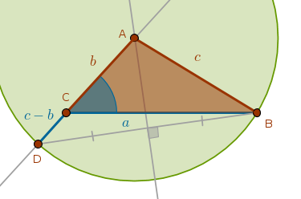
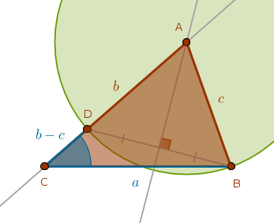
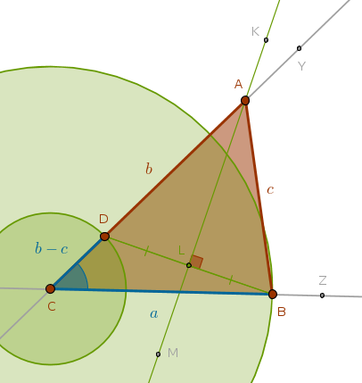

Given
\(a\), \(\angle C\), \(b - c\) or \(c - b\) - one side, the included angle and the difference of the remaining two sides
Analysis
Since a difference of two linear magnitudes is given, it follows that two cases must be considered:
$$c > b$$ $$b > c$$Case 1: \(c > b\)
The side opposite to the given angle is greater than the adjacent side.
Let us assume that the required triangle \(ABC\) has been constructed. From ECons we know how to construct the difference between two line segments. However, since the sides of the assumed triangle are known, all we need to do is construct a \(Cir(A, c)\) which will intersect the extended side \(AC\) at the point \(D\) marking the given linear difference between \(c\) and \(b\):
Working in reverse order, given the points \(D\) and \(B\), how do we locate the center of the \(Cir(A, c)\)?
By the definition of that circle:
$$AD = AB = c$$which means that the point \(A\) is equidistant from the points \(D\) and \(B\). The locus of all such points is \(DB\)'s perpendicular bisector which will intersect the side of the given angle \(C\) opposite to the given side \(a\) at the remaining vertex, \(A\).
Construction Outline
Construct the given side \(a\) at the vertexes \(C\) and \(B\). Construct the given angle \(C\) with the vertex at the point \(C\). Cut the given difference of the sides \(c - b\) at \(C\) and \(D\) on the extension of the side of the given angle \(C\) opposite to the given side \(a\). Bisect the line segment \(DB\). The intersection of that bisector with the side of the given angle \(C\) opposite to the given side \(a\) locates \(A\)
Case 2: \(b > c\)
The side adjacent to the given angle is greater than the opposite side.
This case is almost identical to the previous one except that since \(b\) is greater than \(c\) the \(Cir(A, c)\) will cut the linear difference between them inside the line segment \(CA\) or within the side \(b\) itself - not its extension as in the \(c > b\) case:

Construction Outline
Construct the given side \(a\) at the vertexes \(C\) and \(B\). Construct the given angle \(C\) with the vertex at the point \(C\). Cut the given difference of the sides \(c - b\) at \(C\) and \(D\) on the side of the given angle \(C\) opposite to the given side \(a\). Bisect the line segment \(DB\). The intersection of that bisector with the side of the given angle \(C\) opposite to the given side \(a\) locates \(A\)
Sample Construction
Below is the \(b > c\) case construction. You are encouraged to do the \(c > b\) case yourself:
 $$C, Z$$ $$Ln(C, Z)$$ $$Cir(C, a)$$ $$Cir(C, a) \; \cap \; Ln(C, Z) = B \colon \quad CB = a$$ $$Y \colon \quad \angle YCB = \angle C$$ $$Ln(C, Y)$$ $$Cir(C, b - c)$$ $$Cir(C, b - c) \; \cap \; Ln(C, Y) = D \colon \quad CD = b - c$$ $$Ln(D, B)$$ $$K, L, M \colon \quad Ln(K, M) \; \cap \; Ln(D, B) = L \colon \quad LD = LB$$ $$Ln(K, M) \; \cap \; Ln(C, Y) = A \colon \quad AC = b, AB = c$$ $$Ln(A, B)$$ $$\triangle ABC$$\(\blacksquare\)